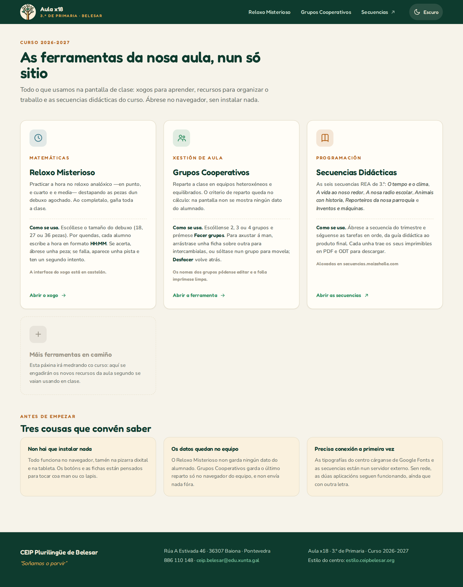

01 · Intelixencia artificial
IA útil para a aula e o centro
- Necesidade
- Unha tarefa docente ou de centro que precisa un recurso, un fluxo ou unha ferramenta propia.
- Durante a formación
- Definimos o problema, construímos unha solución, probámola e revisamos os seus límites pedagóxicos e de privacidade.
- Produto posible
- Un protocolo, recurso interactivo, automatismo ou prototipo documentado.
- Evidencia real
- Aula x18, portal de aula xa en funcionamento.